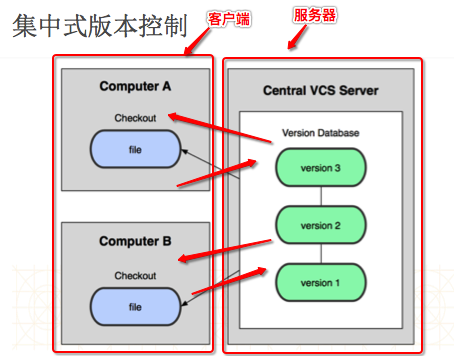

GIT的简单介绍
- 一.GIT的简介
1.什么是git 一款开源的分布式版本控制工具而svn是集中式版本控制器 在世界上所有的分布式版本控制工具中，git是最快、最简单、最流行的,使用的人也是最多的 2.git的起源 作者是Linux之父：Linus Benedict Torvalds 当初开发git仅仅是为了辅助Linux内核的开发（管理源代码） 3.git的现状 在国外已经非常普及，国内并未普及（在慢慢普及) 越来越多的开源项目已经转移到git git的学习也异常重要 4.git的logo - 二.对于其他版本控制工具的介绍
1.CVS 最早的开源、免费的集中式版本控制工具 自身设计有问题，会造成提交文件不完整，版本库莫名其妙损坏的情况,当时仅有CVS,所以程序员尽量去避免这样的问题的出现(文件不完整多提交几次,版本库损坏多备份几份) 2.SVN 修正了CVS的一些稳定性问题，是目前用得最多的集中式版本库控制工具,普及率达到70%-90% 3.ClearCase 收费的集中式版本控制工具，安装比Windows还大，运行比蜗牛还慢 能用ClearCase的一般是世界500强，他们有个共同的特点是财大气粗或者人傻钱多,一般国内没有人用,一般使用SVN,免费还好用 4.VSS 微软的集中式版本控制工具，集成在Visual Studio中 Visual Studio:开发C#,windowsphone,windows的软件 - 三.集中式与分布式版本控制器的区别
1.集中式 ComputerA想要服务器最新的代码直接通过checkout向服务器下载 ComputerA在本地修改代码后,直接提交到服务器 ComputerB想要服务器最新的代码直接通过checkout向服务器下载 ComputerB在本地修改代码后,直接提交到服务器 所有的内容统一交给服务器来进行管理2.分布式 服务器本地有个代码仓库,从服务器更新代码,上传代码 ComputerA想要服务器最新的代码由本地代码仓库将服务器的代码下载下来,再通过本地代码仓库的项目下载到ComputerA ComputerA在本地修改完代码后先提交到本地的代码仓库,再由本地的代码仓库提交到服务器 ComputerB操作与ComputerA相似 代码的提交与更新首先会通过本地代码仓库,本地代码仓库再通过服务器,并不是直接交给服务器来进行管理
- 四.集中式与分布式的简单对比
1.速度 在很多情况下，git的速度远远比SVN快,git提交可以先提交到本地,网络畅通的时候再统一提交到服务器,而SVN的改动必须提交到服务器 2.结构 SVN是集中式管理，git是分布式管理(重要) 3.其他 SVN使用分支比较笨拙，需要先从tags中将代码拷贝过来,修改后备份到分支,分支再与主干的项目合并 git可以轻松拥有无限个分支,轻松的在各个分支随意切换 SVN必须联网才能正常工作，git支持本地版本控制工作(git可以先提交到本地版本库) 旧版本的SVN会在每一个目录置放一个.svn(目前svn1.7的只有一个.svn)，git只会在根目录拥有一个.git - 五.SVN与git的工作流程
1.SVN的工作流程:讲解SVN的时候讲过,这里不再阐述 2.git的工作流程 这幅图以类区分总共有两类角色,一类共享版本库(可以称之为服务器),一类是开发人员 开发人员A想要共享版本库的代码,通过clone命令向服务器下载,将服务器完整的代码下载到本地版本库中,之后本地版本库将代码自动下载到本地 开发人员A在本地修改后,提交代码,通过commit命令先提交到本地版本库,之后通过push命令将本地版本库的代码提交到共享版本库 开发人员B想要共享版本库的代码,通过clone命令向服务器下载,将服务器完整的代码下载到本地版本库中,之后本地版本库将代码自动下载到本地 开发人员B在本地修改后,提交代码,通过commit命令先提交到本地版本库,之后通过push命令将本地版本库的代码提交到共享版本库 开发人员A想要服务器最新的代码,通过pull命令现将服务器最新的代码更新到本地版本库,之后本地版本库将代码自动更新到本地
3.分布式和集中式的最大区别在于 在分布式下开发者可以本地提交,每个开发者机器上都有一个服务器的数据库 六.如何使用git
- 命令行:常用的命令简单且不多,直接使用命令行就行
图形化界面工具
xcode xcode对git的集成非常非常好,一般情况下,直接使用xcode就行
七.总结
1.git的简介 2.git与其他版本控制的对比 3.集中式和分布式的区别 4.git的工作流程 5.git的使用